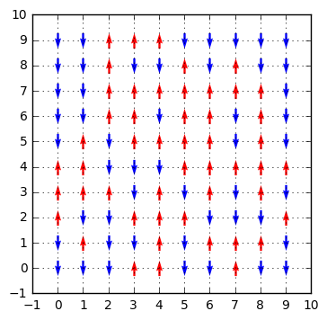
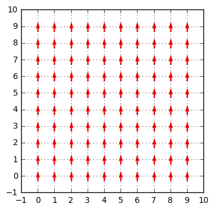
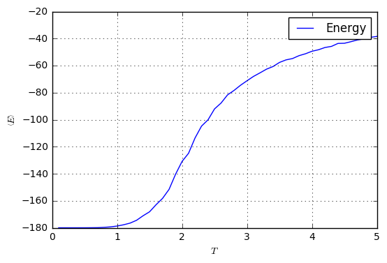
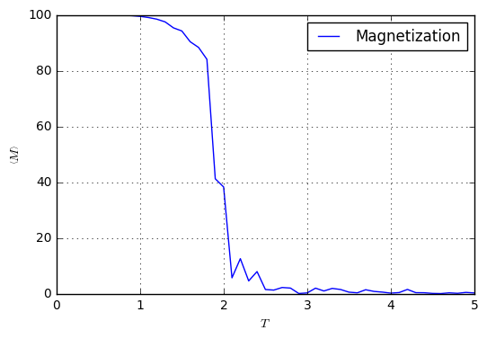
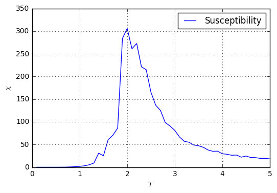
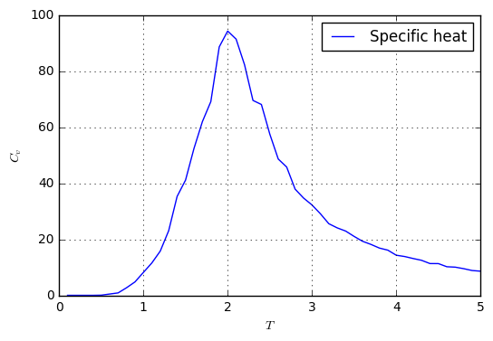

Construcción de Programa Monte Carlo para Simulación de un sistema Ising 2D
Todo este tutorial se encuentra en un scritp de ipython notebook. Lo puedes descargar de aquí.
Este tutorial está elaborado con el fin de proporcionar una guía práctica para la elaboración de un programa Monte Carlo para la simulación de un sistema Ising 2D. El programa está construido en python3. Es cierto que la complejidad del programa es mínima, pero la eficiencia de los ciclos en python es mínima. Es por ello que cabe resaltar que es recomendable emplear otro lenguaje, sea C++ o Fortran, para la implementación del paso Monte Carlo y el algoritmo de Metrópolis.
El sistema que se desea simular es un Ising 2D, cuyo Hamiltoniano consiste únicamente en el término de intercambio
donde es la constante de intercambio y y son los espines de la posición y , respectivamente.
Para calcular la magnetización se emplea
y para el cálculo de la susceptibilidad magnética y el calor específico se sigue
Si quieres puedes descargar el scritp en un ipython notebook aquí.
Importación de librerías
import numpy
from collections import defaultdict
from matplotlib import pyplot
import itertools
%matplotlib inline
- numpy se emplea para computación científica. Esta contiene muchas funciones para cálculos numéricos.
- defaultdict es una clase para crear diccionarios donde cada key tendrá un value de un tipo predeterminado.
- pyplot se emplea para las gráficas.
- itertools es una librería para construcción de iteradores.
- la sentencia %matplotlib inline es por si se está haciendo este tutorial en un ipython notebook, las gráficas de matplotlib sean mostradas dentro de celdas.
Definición de constantes
length = 10
J = 1.0
kB = 1.0
- length es la longitud de nuestro sistema.
- J es la constante de intercambio.
- kB es la constante de Boltzmann.
Creación de arreglos
sites = list()
spins = dict()
nbhs = defaultdict(list)
- sites es el arreglo donde se almacenarán las parejas de los elementos de la red.
- spins es un diccionario donde las keys son las parejas y los values son el respectivo valor para el espín.
- nbhs es un
defaultdict(list), es decir, los values por defecto serán listas vacías. En este diccionario las keys son las parejas y los values son una lista de tuplas, donde cada pareja corresponde a un vecino.
Creación de la muestra
for x, y in itertools.product(range(length), range(length)):
sites.append((x,y))
Debemos crear la red cuadrada de lado length y agregar a la lista sites las parejas como tuplas. Se puede observar que sites es una lista donde cada elemento es una tupla que corresponde a un sitio:
print(sites)
[(0, 0), (0, 1), (0, 2), (0, 3), (0, 4), (0, 5), (0, 6), (0, 7), (0, 8), (0, 9), (1, 0), (1, 1), (1, 2), (1, 3), (1, 4), (1, 5), (1, 6), (1, 7), (1, 8), (1, 9), (2, 0), (2, 1), (2, 2), (2, 3), (2, 4), (2, 5), (2, 6), (2, 7), (2, 8), (2, 9), (3, 0), (3, 1), (3, 2), (3, 3), (3, 4), (3, 5), (3, 6), (3, 7), (3, 8), (3, 9), (4, 0), (4, 1), (4, 2), (4, 3), (4, 4), (4, 5), (4, 6), (4, 7), (4, 8), (4, 9), (5, 0), (5, 1), (5, 2), (5, 3), (5, 4), (5, 5), (5, 6), (5, 7), (5, 8), (5, 9), (6, 0), (6, 1), (6, 2), (6, 3), (6, 4), (6, 5), (6, 6), (6, 7), (6, 8), (6, 9), (7, 0), (7, 1), (7, 2), (7, 3), (7, 4), (7, 5), (7, 6), (7, 7), (7, 8), (7, 9), (8, 0), (8, 1), (8, 2), (8, 3), (8, 4), (8, 5), (8, 6), (8, 7), (8, 8), (8, 9), (9, 0), (9, 1), (9, 2), (9, 3), (9, 4), (9, 5), (9, 6), (9, 7), (9, 8), (9, 9)]
Creación de estado aleatorio
def random_configuration():
for spin in sites:
spins[spin] = numpy.random.choice([-1, 1])
La función random_configuration recorre todos los sitios y les asigna un valor de 1 o -1 aleatoriamente. Se empleará para darle el estado inicial al sistema a temperatura alta.
Si se ejecuta la función random_configuration, el diccionario spins tomará valores de -1 o 1 para cada key:
random_configuration()
print(spins)
{(7, 3): -1, (6, 9): -1, (1, 3): 1, (4, 8): -1, (3, 0): 1, (2, 8): 1, (9, 8): -1, (8, 0): -1, (0, 7): -1, (6, 2): -1, (1, 6): -1, (3, 7): 1, (2, 5): -1, (8, 5): 1, (5, 8): 1, (4, 0): 1, (9, 0): -1, (6, 7): 1, (5, 5): 1, (7, 6): -1, (5, 0): -1, (0, 4): 1, (3, 5): 1, (1, 1): 1, (3, 2): 1, (2, 6): 1, (8, 2): -1, (4, 5): 1, (9, 3): -1, (6, 0): -1, (1, 4): 1, (7, 5): -1, (2, 3): 1, (1, 9): -1, (8, 7): 1, (4, 2): 1, (9, 6): -1, (6, 5): 1, (5, 3): -1, (0, 1): -1, (7, 0): 1, (6, 8): -1, (3, 1): -1, (9, 9): -1, (0, 6): -1, (1, 7): -1, (0, 9): -1, (7, 8): 1, (2, 4): -1, (8, 4): 1, (5, 9): -1, (4, 7): 1, (9, 1): -1, (6, 6): 1, (5, 6): 1, (7, 7): 1, (2, 1): -1, (8, 9): -1, (9, 4): 1, (5, 1): -1, (0, 3): 1, (7, 2): -1, (1, 2): -1, (3, 8): -1, (4, 9): 1, (3, 3): -1, (2, 9): 1, (8, 1): 1, (4, 4): -1, (6, 3): 1, (1, 5): 1, (8, 8): -1, (3, 6): 1, (2, 2): -1, (8, 6): 1, (4, 1): 1, (9, 7): -1, (6, 4): 1, (5, 4): 1, (0, 0): -1, (7, 1): 1, (0, 5): -1, (1, 0): -1, (0, 8): -1, (7, 9): -1, (2, 7): 1, (8, 3): 1, (4, 6): -1, (9, 2): 1, (3, 4): -1, (6, 1): 1, (5, 7): 1, (7, 4): 1, (2, 0): -1, (1, 8): -1, (3, 9): 1, (4, 3): 1, (9, 5): -1, (5, 2): 1, (0, 2): 1}
Función para visualización de los espines
def plot_spins():
pyplot.figure()
colors = {1: "red", -1: "blue"}
for site, spin in spins.items():
x, y = site
pyplot.quiver(x, y, 0, spin, pivot="middle", color=colors[spin])
pyplot.xticks(range(-1,length+1))
pyplot.yticks(range(-1,length+1))
pyplot.gca().set_aspect("equal")
pyplot.grid()
pyplot.show
La función consiste en recorrer cada pareja y en cada punto colocar una flecha de color rojo si el sitio tiene valor 1 o azul si tiene valor -1. Se ejecuta la función plot_spins para visualizar el estado del sistema:
plot_spins()

Asignación de vecinos
nbhs = defaultdict(list)
for site in spins:
x, y = site
if x + 1 < length:
nbhs[site].append(((x + 1) % length, y))
if x - 1 >= 0:
nbhs[site].append(((x - 1) % length, y))
if y + 1 < length:
nbhs[site].append((x, (y + 1) % length))
if y - 1 >= 0:
nbhs[site].append((x, (y - 1) % length))
Recorremos todos los sitios y agregamos en su lista de nbhs los sitios vecinos. Recordemos que el sistema tiene condiciones periódicas de frontera.
Creación de funciones para cálculo de energía local, energía total y magnetización
def energy_site(site):
energy = 0.0
for nbh in nbhs[site]:
energy += spins[site] * spins[nbh]
return -J * energy
def total_energy():
energy = 0.0
for site in sites:
energy += energy_site(site)
return 0.5 * energy
def magnetization():
mag = 0.0
for spin in spins.values():
mag += spin
return mag
- La función energy_site calcula la energía local del sitio . Debe recibir como argumento una tupla que corresponderá al sitio . Recordemos que el Hamiltoniano sólo tiene el término de intercambio.
- La función total_energy calcula la energía total del sistema sumando las energías locales de cada sitio. Al final se debe dividir por 2 debido a que las interacciones se cuentan 2 veces.
- La función magnetization computa la magnetización total de la red sumando los valores del espín de cada sitio.
Si se imprime la magnetización del sistema, debe ser consecuente con la suma de los espines en la figura:
plot_spins()
print("magnetization = ", magnetization())
magnetization = 0.0

Implementación del algoritmo de Metrópolis
def metropolis(site, T):
oldSpin = spins[site]
oldEnergy = energy_site(site)
spins[site] *= -1
newEnergy = energy_site(site)
deltaE = newEnergy - oldEnergy
if deltaE <= 0:
pass
else:
if numpy.random.uniform(0, 1) <= numpy.exp(-deltaE/(kB*T)):
pass
else:
spins[site] *= -1
Para mayor información, se puede consultar el algoritmo de Metrópolis en http://hua-zhou.github.io/teaching/st758-2014fall/top10/metropolis.pdf
Implementación del paso Monte Carlo
def monte_carlo_step(T):
for i in range(len(sites)):
int_rand_site = numpy.random.randint(0, len(sites))
rand_site = sites[int_rand_site]
metropolis(rand_site, T)
Un paso Monte Carlo consiste en recorrer la cantidad de sitios que tenga la red aleatoriamente y en cada elección aplicar el algoritmo de Metrópolis.
Simulación
Definición de parámetros
amount_mcs = 10000
T_high = 5.0
T_low = 0.01
step = -0.1
Se definen los parámetros de la simulación. Entre ellos está la cantidad de pasos Monte Carlo amount_mcs, la temperatura inicial T_high y la temperatura final T_low. Recordemos que . A su vez, se define el paso entre temperaturas step.
Ciclo de temperatura
%%time
temps = numpy.arange(T_high, T_low, step)
energies = numpy.zeros(shape=(len(temps), amount_mcs))
magnetizations = numpy.zeros(shape=(len(temps), amount_mcs))
random_configuration()
for ind_T, T in enumerate(temps):
for i in range(amount_mcs):
monte_carlo_step(T)
energies[ind_T, i] = total_energy()
magnetizations[ind_T, i] = magnetization()
CPU times: user 20min 45s, sys: 84 ms, total: 20min 45s
Wall time: 20min 45s
Se crea el arreglo de temperaturas con los valores establecidos anteriormente. Se aloja espacio para almacenar la energía del sistema y la magnetización. Se recorre las temperaturas y los pasos Monte Carlo. En cada paso de temperatura y en cada paso Monte Carlo se almacena la energía total y la magnetización del sistema. Los arreglos energies y magnetizations se emplearán para calcular los promedios estadísticos.
Una simulación con 10000 pasos Monte Carlo, desde hasta con una paso de en un computador con Intel® Core™ i7-3612QM CPU @ 2.10GHz tardó 20min 45s.
Podrías observar el estado final de la muestra a :
plot_spins_spinst_spins()

Graficación
Cálculo de promedios
tau = amount_mcs // 2
energy_mean = numpy.mean(energies[:, tau:], axis=1)
magnetization_mean = abs(numpy.mean(magnetizations[:, tau:], axis=1))
Se dejará la mitad de pasos Monte Carlo para relajación. La otra mitad se ha de promediar.
Gráficas para la energía total y la magnetización en función de la temperatura
pyplot.figure()
pyplot.plot(temps, energy_mean, label="Energy")
pyplot.legend()
pyplot.xlabel(r"$T$")
pyplot.ylabel(r"$\left<E\right>$")
pyplot.grid()
pyplot.show()
pyplot.figure()
pyplot.plot(temps, magnetization_mean, label="Magnetization")
pyplot.legend()
pyplot.xlabel(r"$T$")
pyplot.ylabel(r"$\left<M\right>$")
pyplot.grid()
pyplot.show()


Cálculo de la susceptibilidad magnética
magnetization_std = numpy.std(numpy.abs(magnetizations[:, tau:]), axis=1)
susceptibility = magnetization_std ** 2 / (kB * temps)
pyplot.figure()
pyplot.plot(temps, susceptibility, label="Susceptibility")
pyplot.legend()
pyplot.xlabel(r"$T$")
pyplot.ylabel(r"$\chi$")
pyplot.grid()
pyplot.show()

Cálculo del calor específico
energy_std = numpy.std(energies[:, tau:], axis=1)
specific_heat = energy_std ** 2 / (kB * temps * temps)
pyplot.figure()
pyplot.plot(temps, specific_heat, label="Specific heat")
pyplot.legend()
pyplot.xlabel(r"$T$")
pyplot.ylabel(r"$C_v$")
pyplot.grid()
pyplot.show()

Te invitamos a continuar con tu aprendizaje desde este punto. Podrías intentar obtener curvas de relajación o graficar otro tipo de cantidades como cumulantes de Binder.
Cualquier inquietud, no dudes en escribirme jdalzatec.